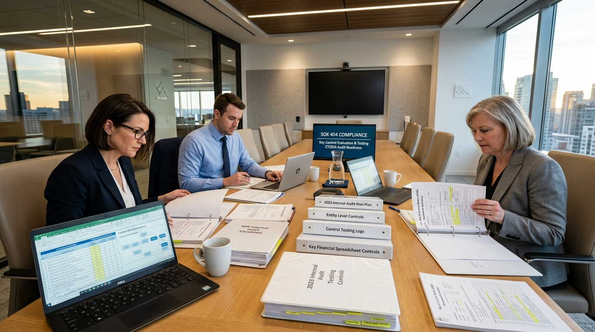
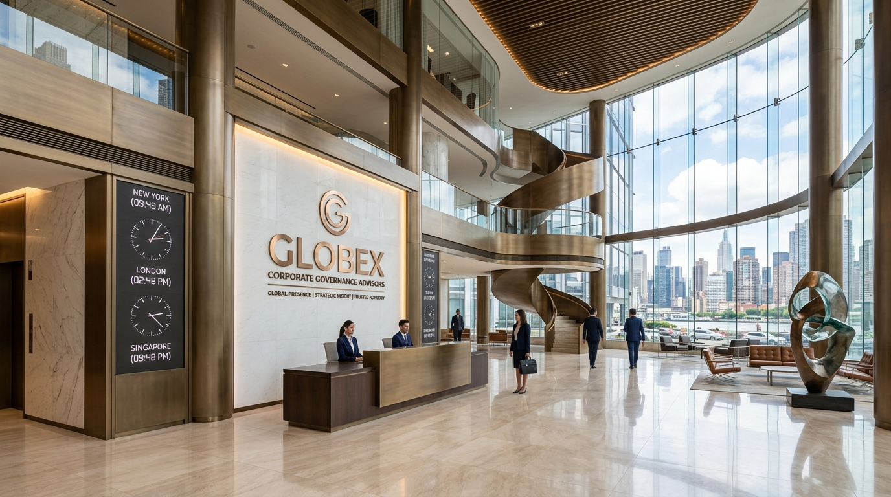

Architecting Board Excellence.
Safeguarding Enterprise Legacy.
Founded on the principle that corporate governance is an enterprise strategic asset, Governora provides independent, legally defensible counsel to corporate boards, audit committees, and institutional investors across North America, Europe, and Asia-Pacific.
Advising FTSE 100, S&P 500, and institutional family boards without underwriting or brokerage conflicts.
Safeguarding Enterprise Legacy Through Uncompromising Integrity
In an era where governance failures trigger rapid market value destruction, regulatory sanctions, and personal director liability, Governora stands as an independent, objective guardian of board excellence.
Established in 2008 following transatlantic regulatory reforms, our firm was purposefully engineered as an antidote to multi-disciplinary accounting conglomerates whose advisory opinions are chronically constrained by statutory audit dependencies and underwriting interests. Governora maintains zero commercial affiliations, ensuring every assessment is impartial, legally defensible, and uncompromised.
Our Mission
Empowering corporate boards with legally defensible oversight frameworks, robust committee architectures, and crisis-resilient risk barriers.
Our Vision
Setting the definitive global benchmark for institutional board effectiveness, independent evaluation, and cross-border regulatory audit readiness.
Absolute Neutrality
100% independent advisory unencumbered by investment banking, underwriting, or statutory auditing commercial relationships.
Confidential Rigor
Fiduciary-grade discretion, data compartmentalization, and legally privileged documentation protecting sensitive boardroom deliberations.
Defensible Precedence
Methodologies anchored in established Delaware Chancery jurisprudence, UK Corporate Governance Code, and ISO 37000 governance standards.
Core Governance Disciplines & Specialized Practice Areas
Our advisory counsel integrates legal precision, forensic audit readiness, and behavioral boardroom dynamics to address the most urgent challenges facing modern boards.
Boardroom Architecture & Committee Modernization
A high-performing board requires precision structural engineering. Governora conducts comprehensive overhauls of board constitutions, committee charters, and delegation-of-authority matrices.
- Committee Mandate Calibration: Clear division of responsibilities across Audit, Nominating/Governance, Compensation, and Risk Committees.
- Director Skills-Matrix & Succession: Cognitive diversity profiling, tenure sequencing, and defensible independent director succession pipelines.
- Independent Lead Director Protocols: Ensuring robust checks-and-balances in executive chair or combined CEO/Chair corporate structures.

Transatlantic Regulatory Harmonisation & Audit Readiness
Multinational enterprises navigate conflicting regulatory regimes. Governora bridges the widening compliance gulf between North American SEC frameworks and European Union ESG/CSRD disclosure standards.
- Cross-Border Gap Analysis: Reconciling US SEC 10-K disclosures with EU CSRD Double Materiality and UK FCA requirements.
- SOX 404 & Internal Controls Forensics: Material weakness remediation, automated internal control testing, and external auditor alignment.
- Cyber Incident 4-Day Disclosures: Materiality determination matrices and real-time boardroom incident escalation playbooks.
Institutional Crisis Governance &
Activism Defense
When hostile activist hedge funds initiate proxy contests or whistleblowers submit critical allegations, board procedures come under intense scrutiny.
- Special Committee Formation: Independent counsel retention, mandate scoping, and conflict insulation protocols.
- Activist Proxy Vulnerability Audits: Pre-emptive vulnerability assessments against ISS and Glass Lewis voting policies.
- Whistleblower Escalation Trees: FCPA, anti-bribery, and financial fraud internal investigation frameworks.
ESG Fiduciary Oversight &
Greenwashing Risk Mitigation
Moving ESG from public relations into defensible fiduciary oversight. We insulate directors from rising greenwashing litigation while meeting investor expectations.
- Double-Materiality Audits: Rigorous evidence testing for Scope 1-3 climate disclosures and net-zero roadmaps.
- Board Climate Governance: Embedding climate risk into board audit and enterprise risk committee charters.
- Director Safe-Harbor Protections: Documenting the business judgment rule in sustainability capital allocation.
The Governora Governance Lifecycle
Our four-stage diagnostic framework ensures that board policies are not merely aspirational documents, but operational defense ecosystems tested against real-world enforcement.
Institutional Diagnostic &
Conflict Audit
Confidential director interviews, committee charter reviews, peer-benchmarking against sector leaders, and independence conflict audits.
Charter & Committee
Recalibration
Restructuring committee mandates, revising delegation-of-authority matrices, drafting executive remuneration checks, and formalizing lead director roles.
Crisis Stress-Testing &
Tabletop Simulation
Live executive simulation workshops testing board response during simulated cyber ransomware breaches, hostile proxy attacks, and regulatory inquiries.

Continuous Oversight &
Annual Attestation
Quarterly Key Risk Indicator (KRI) dashboard reporting, regulatory statutory change surveillance, and annual independent board evaluation attestation.

Led by Experienced Governance Authorities
Our practice partners combine decades of regulatory oversight, corporate directorships, and international legal counsel.

International Footprint Across Key Financial Hubs
Our multi-jurisdictional presence enables senior partners to be on-site within hours for urgent board consultations, special committee mandates, and cross-border regulatory hearings.
Adhering to International Governance Standards
Engage Governora For Your Board's Next Diagnostic
Our practice operates under strict conflict-of-interest checks before preliminary meetings. All initial consultations are conducted under bilateral non-disclosure agreements.